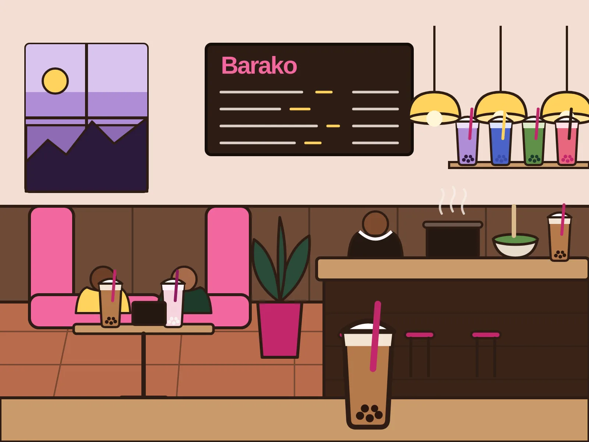

Nine cafes. Mumbai.
Where comfort meets cozy.
Handcrafted boba. Ceremonial matcha. A ramen bar where someone cooks a Nongshim pack in front of you. Bao and dim sum, all of it vegetarian. Stay as long as you like.

Two hours on one cup is the intended use.
Open stupidly late.
- Doors open
- 8:00 to 9:30 AM
- Doors close
- 12:00 to 1:00 AM
- Some suburban rooms
- 24 hours
Those are the ranges across the chain. Exact hours for each room are confirmed one store at a time and published on its own page. Until then, assume late.
Four reasons people queue.
-
Brown sugar
Milk tea. The sugar is cooked into the pearls.
-
Taro
Purple, thick, the one people photograph.
-
Butterfly pea
Blue tea, blue pearls. It changes colour when the lemon goes in.
-
Lychee
Fruit tea with white pearls. Cold enough to hurt.
For when Mumbai stops being reasonable.
- Lychee.
- Butterfly pea.
- Strawberry.
- Fizz, if you want it.
Jasmine tea underneath, real fruit on top, more ice than seems polite. Any of them turns into a soda on request. Order two: the first one goes fast.
Then, quiet.
Ceremonial grade matcha, sifted and whisked to order. Scroll slowly. The whisk moves when you do.
The ramen bar
Pick a pack.
Start with a Nongshim pack off the shelf. Someone cooks it in front of you, and asks what goes in. The cup in the corner is about to become the bowl.
Egg.
Cheese.
The egg goes in soft. The cheese goes in last so it melts into the broth rather than sinking.
Chicken. Chilli oil.
Greens for the look of it. Chicken if you eat it. Then the chilli oil, and you decide how much. This is the point where the room gets loud again.
Yours, from ₹290.
That is the ramen and a boba together. Eat it at the bar and watch the next one being made, or take the booth and let it go cold in good company.
Nobody leaves with just a drink.
Bao, momos and dumplings, out of the steamer and onto the table. Every one of them vegetarian, so nobody at the table has to check the card twice.
- Bao
- Momos
- Dumplings
- All vegetarian
Nine rooms, one city.
Western suburbs
Central and eastern suburbs
Each room has its own page with directions and, as we confirm them, hours.